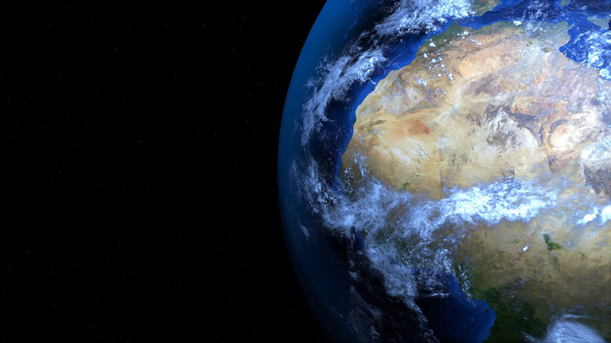

Je ne vous apprends rien en disant que les ressources de notre planète sont limitées. Certaines se renouvellent, c’est vrai, mais il faut leur en laisser le temps.
Entre le 1er Janvier et le 29 juillet 2019, l’humanité a consommé toutes les ressources que la Terre était capable de renouveler en 2019.
Depuis, les hommes empiètent déjà sur les ressources allouées à 2020. Et ainsi de suite. Nous consommons de plus en plus et beaucoup trop : la Terre vit à crédit.
En fait,
c’est un peu comme si l’on volait la part qui revenait aux générations futures. Pas facile de rembourser la dette.
A moins d’un changement radical de comportement !
https://www.footprintcalculator.org/
Sur ce site, vous pouvez
calculer votre empreinte carbone et voir à quelle date les ressources d’une année se seraient épuisées si toute l’humanité décidait de vous copier.
Tiendrez-vous plus longtemps que le 29 juillet ?

Et dire que je pensais faire des efforts : je ne vais qu’au 1er octobre.
Ce qui nous fait trois mois à crédit.
Bien sûr, le questionnaire ne fait qu’une vague estimation de mon empreinte carbone, mais tout de même.
Selon le site, une planète ne suffirait pas à porter une humanité entière de petits moi : il en faudrait 1,3 !
Et si l’humanité entière se comportait comme le français lambda :
2,7 planètes. Et au moins 5 pour les américains.
Bref, il est temps de réduire notre impact.
Bien sûr, il y a les solutions idéales :

Les gouvernements s’engagent à se mettre au vert, signent des accords et s’y tiennent. On passe illico presto à l’énergie verte, au vélo et à une agriculture durable et locale. L’Etat arrête les industries polluantes et crée des métiers d’avenir dans le domaine des énergies renouvelables, la gestion des déchets, le recyclage, l’artisanat local, etc… pour occuper tout ce petit monde. Il crée toujours plus de réserves naturelles et protège les écosystèmes. Les forêts sont contentes, les oiseaux chantent et les renards dansent de joie ; vous mangez des fraises bio au bord d’une rivière propre : ici, ce sera le paradis !
Mais pas tout de suite.
Nous en sommes encore au stade où l’appât du gain mène le monde à la baguette. En attendant un coup de pouce des puissants – ou un retrait des lobbys -
il nous faut nous tourner vers de plus petites solutions.
→
Faire pression. On vote aussi bien dans les urnes qu’au supermarché. Reposez ce jambon en plastique réhaussé de poisons chimiques et passez à la ferme du coin, ou commandez un panier de fruits et légumes à l’AMAP la plus proche. Les choix des consommateurs orientent mine de rien la production : à force de refuser les poulets de batterie, les français ont finalement obtenu la fermeture de ces batteries. Ouf !
→ Pas facile de se poser toutes les bonnes questions avant d’acheter tel ou tel produit :
en ai-je vraiment besoin ? y a-t-il une alternative plus durable ? un produit plus local ? puis-je y aller à pied ?... Mais ça en vaut la peine. Chaque petit geste compte. Pour la Terre… et pour vous ! Parce que si comme moi, vous aimez la vie, les pingouins et la neige immaculée, vous serez fiers de savoir que vous avez fait de votre mieux pour les préserver.

→
« Be the change you want to see in the world » disait Gandhi.
Commencer par se changer soi-même, ça redonne une certaine maîtrise de la situation. Et on inspire forcément quelques personnes au passage à changer elles aussi ! Si j’avais honte au départ de trimballer tous mes bocaux dans les magasins pour faire des courses en vrac, je vois de plus en plus de gens apporter leurs propres récipients. De même le midi, quand je demande mon repas à emporter dans un tupperware plutôt qu’une barquette plastique. « Ah, c’est la deuxième fois qu’on me le demande ce midi », s’étonne le vendeur. Ça fait plaisir !
En attendant de changer le monde, concentrons-nous sur ce que nous pouvons faire à notre échelle en supposant que le monde suivra. Et s’il ne suit pas, il sera toujours temps – une fois exemplaires – d’aller lui botter les fesses. Mais d’ici là, notre sourire lui aura sûrement donné envie de s’y mettre.
Plus concrètement, comment agir ? Refuser d’entretenir un système économique dépassé, qui épuise les ressources, pollue et tue à petit feu, ça me semble une bonne idée. Quelle chance : c’est l’un des effets secondaires du minimalisme !
Le minimalisme ? Oui, vous savez, cette nouvelle formule du bonheur. Venez, je vous la présente !